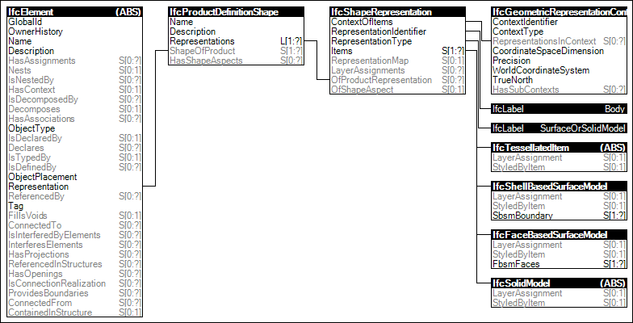

Link to this page
Link to this pageThe Body SurfaceOrSolidModel Geometry is the representation of the 3D shape of a product by surface or solid models and allows for a mixed representation.
The following attribute values for the IfcShapeRepresentation holding this geometric representation shall be used:
Figure 42 illustrates an instance diagram.
 |
Figure 42 — Body SurfaceOrSolidModel Geometry |